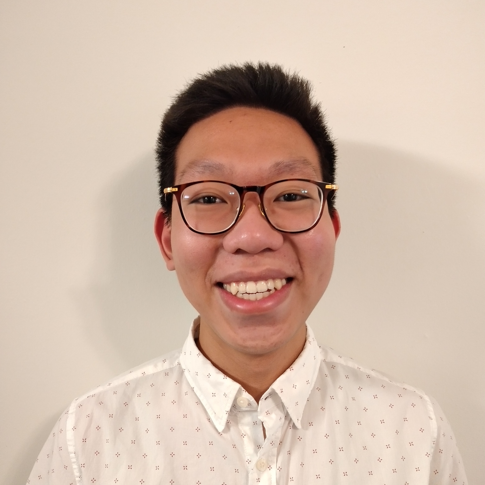
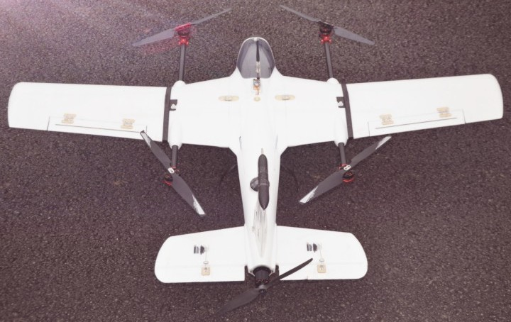
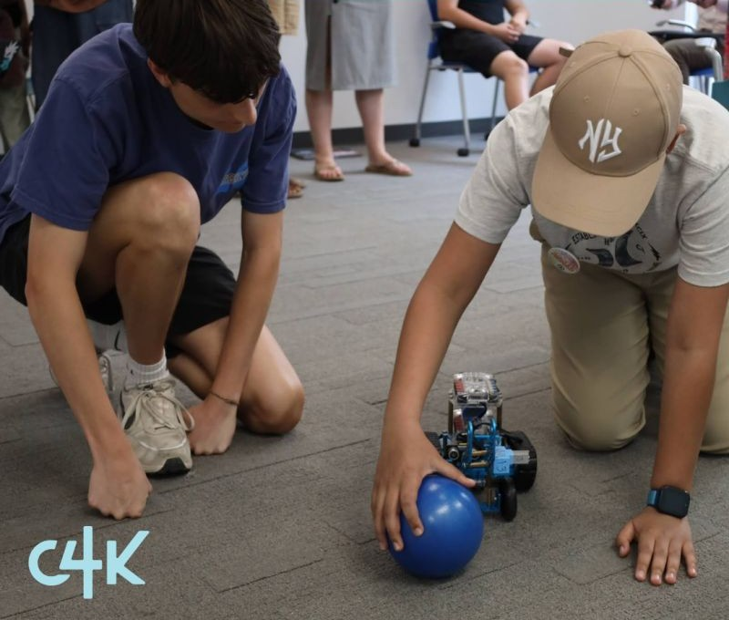

Theodore LengKongI am an undergraduate researcher in the Department of Mechanical and Aerospace Engineering at the University of Virginia, working with Dr. Haibo Dong and Dr. Frank Lagor. I will earn my bachelor's degree from UVA in May 2026, where I conducted research in bio-inspired fluid dynamics, computational aerodynamics, and machine learning for autonomous systems. After work, I enjoy cycling and building/flying drones. Email / CV / Google Scholar / LinkedIn |
 |
{kind=link}
ResearchI am a bio-inspired fluid dynamicist focusing on agile flight and efficient swimming. Through computational fluid dynamics simulations, machine learning, and experimental robotics, I investigate how biological flyers and swimmers achieve remarkable performance and develop design principles for autonomous vehicles. My research provides guidance for the aerodynamic optimization of micro aerial vehicles and the hydrodynamic design of underwater robots. My approach to bio-inspired systems: I believe that understanding the fundamental physics governing biological flight and swimming enables us to extract actionable design principles for engineered systems. By combining high-fidelity CFD simulations on the UVA Rivanna Supercomputer with machine learning algorithms and experimental validation, I identify which biological features are essential for performance and which can be simplified for practical robotic implementation. My work spans from analyzing damselfly aerodynamics to developing artificial lateral line systems for underwater robots, with applications ranging from micro air vehicles to autonomous underwater vehicles for drag reduction and energy harvesting. I'm actively searching for PhD programs for Fall 2026. I'm specifically interested in labs working on bio-inspired robotics, flapping-wing systems, underwater robots, micro aerial vehicles, adaptive morphology, and collective robotic systems. |
Research InterestsBio-inspired Fluid Dynamics | Computational Aerodynamics | Machine Learning for Robotics | Micro Aerial Vehicles | Autonomous Underwater Vehicles | Unsteady Aerodynamics | Fish Schooling Hydrodynamics | Sensor Integration | Bio-inspired Sensing Systems |
Research Projects |

|
Dragonfly-Inspired Micro Air Vehicle Design and Optimization
Aerodynamics Lead, Senior Capstone Team, Dr. Haibo Dong Leading aerodynamic design and optimization for bio-inspired micro aerial vehicle (MAV) featuring independent four-wing control with autonomous take-off, hover, turning, forward flight, and landing capabilities. Conducting CFD analyses to optimize wing rigidity, angle of attack, and flight performance parameters across multiple flight modes. Integrating computational findings from previous damselfly research into practical MAV design constraints. Technical approach: The dragonfly's independent four-wing control enables unprecedented maneuverability through asymmetric wing kinematics during turning and the ability to optimize each wing's parameters for specific flight modes. By leveraging insights from my damselfly backward flight and gliding research, we design wing structures that balance aerodynamic efficiency with structural robustness while meeting autonomous flight control requirements. |

|
Machine Learning for Fish Position Classification in Schools
Flow Simulation Research Group Harrison Grant Funded | Targeting Bioinspiration & Biomimetics Developing machine learning models to classify fish positions within schools using pressure sensor data and predict optimal schooling configurations for thrust/drag optimization. By analyzing high-fidelity CFD simulations of schooling fish, we train neural networks to identify a fish's location and orientation relative to neighbors based solely on the pressure field it experiences, without requiring vision or inertial sensing. Key innovation: Our models achieve high accuracy in position classification using minimal sensor configurations, demonstrating that distributed pressure sensing alone provides sufficient information for schooling coordination. This research has direct applications for coordinating robotic fish swarms and understanding collective behavior in biological schools, with implications for energy-efficient formation control in autonomous underwater vehicles. |

|
MantaBot: Wake Riding with Artificial Lateral Line Sensing
Frank Lagor Lab Targeting Bioinspiration & Biomimetics Developing machine learning algorithms for the UVA MantaBot to predict drag forces and identify optimal positioning in wake flows using pressure sensor data alone. Inspired by the lateral line system in fish, we create an artificial sensory system enabling the robot to sense and exploit hydrodynamic features without vision. Designed and fabricated sensor integration hardware using SolidWorks, 3D printing, and embedded systems (Raspberry Pi). Conducting towing tank experiments for sensor calibration and algorithm validation. Experimental validation: We programmed machine learning models in Python to optimize sensor response outputs. The system successfully detects Karman vortex streets and identifies optimal wake-riding positions for drag reduction, demonstrating the feasibility of vision-free hydrodynamic sensing for autonomous underwater vehicles performing energy harvesting through formation swimming. |

|
Optimal Gliding Configurations in Damselflies for MAV Applications
Flow Simulation Research Group Harrison Grant | Targeting International Journal of Micro Air Vehicles Investigating optimal gliding configurations for damselflies to maximize aerodynamic efficiency using computational fluid dynamics simulations and aerodynamic force analysis. Through parametric studies varying wing sweep angle and angle of attack, we identify configurations that optimize lift-to-drag ratio during unpowered gliding flight. Applications: This research provides design guidance for energy-efficient micro aerial vehicles capable of extended surveillance missions through intermittent gliding. By understanding how damselflies minimize drag during glides between flapping cycles, we extract scaling laws applicable to bio-inspired MAV design for maximizing flight endurance. |

|
Aerodynamic Mechanisms of Damselfly Backward Flight
Flow Simulation Research Group Spectra Journal, 2024 (Published - Peer Reviewed) First-author investigation of backward flight aerodynamics in damselflies, focusing on wing kinematics and leading-edge vortex dynamics. Using high-fidelity computational fluid dynamics simulations on the UVA Rivanna Supercomputer, we analyzed how damselflies achieve this rare capability through precisely coordinated forewing and hindwing kinematics generating rearward thrust while maintaining sufficient lift. Key findings: We found that leading-edge vortices remain attached longer during backward flight than in forward flight, enhancing force production. Dean's Undergraduate Engineering Research Fellowship recipient for this research. Results presented at APS Division of Fluid Dynamics 2024 and Fall Engineering Expo 2024. |
Publications & Conference Presentations
LengKong, T., Huang, Z., Dong, H. “Using Machine Learning to Identify Schooling Neighbors from Pressure Signatures of Digital Fishes.” ONR MURI Review, September 2025.
LengKong, T., et al. "Aerodynamic Analysis of Backward Flight in Damselflies: Wing Kinematics and Leading-Edge Vortex Dynamics." Spectra Journal, 2024.
Menzer, A., LengKong, T., Ni, D., Nagpal, R., and Dong, H. "Hydrodynamic Interactions in Fish-Like Robotic Swarms with Flexible Propulsors." Proceedings of the ASME 2024 Fluids Engineering Division Summer Meeting, Anaheim, CA, July 2024. DOI: 10.1115/FEDSM2024-131405.
Guo, J., Bode-Oke, A., LengKong, T., & Dong, H. "Agile Maneuvering: Damselfly Backward Flight and Its Aerodynamic Mechanism." APS Division of Fluid Dynamics Meeting Abstracts, November 2024.
LengKong, T. "Aerodynamics of Backward Flight in Damselflies." Fall Engineering Expo, University of Virginia, 2024.
LengKong, T. "Hydrodynamic Effects of Fin Shapes in Bio-robotic Platforms." Undergraduate Research Symposium, University of Virginia, 2024.
LengKong, T. "K-5 Teacher Development Program Effectiveness in STEM Education." Undergraduate Research Symposium, University of Virginia, 2023.
|
Manuscripts In Preparation
LengKong, T., et al. "Parametric Study of Damselfly Gliding: Sweep and Angle of Attack Effects on Aerodynamic Performance for Micro Aerial Vehicle Applications." Targeting International Journal of Micro Aerial Vehicles.
LengKong, T., et al. "Machine Learning Prediction of Karman Vortex Street Dynamics in Bio-inspired Manta Ray Robots." Targeting Bioinspiration & Biomimetics.
|
Personal Projects & Industry Experience |
|  |
Autonomous VTOL Delivery Drone
Designed 5kg payload capacity drone with 1.5-hour flight time. Implemented autonomous flight control and real-time video monitoring. The vertical take-off and landing capability enables operation in constrained environments while the fixed-wing cruise mode provides efficient long-range delivery. Integrated custom flight controller with GPS waypoint navigation and return-to-home safety features. |

|
Engineering Intern
One Moment Air Racing Performed aerodynamic force calculations for P-51 Mustang flight control systems, contributing to aircraft modifications for air racing competition. Designed CAD models and carbon fiber components using SolidWorks, balancing aerodynamic performance with structural requirements and weight constraints. Analyzed mechanical systems and developed 3D-printable aircraft components for rapid prototyping. This experience bridged theoretical aerodynamics with practical manufacturing considerations, teaching me how design decisions must account for material properties, fabrication methods, and real-world operational constraints. |
Teaching & MentorshipI have experience in teaching both theoretical and hands-on engineering courses. I am passionate about making engineering education accessible through clear explanations, practical demonstrations, and patient mentorship. |
|
Teaching Assistant - Computer-Aided Design (CAD)
University of Virginia Department of Mechanical and Aerospace Engineering Holding office hours and grading assignments for undergraduate CAD course. Helping students master SolidWorks fundamentals including part modeling, assemblies, drawings, and design intent. Certified SolidWorks Associate (CSWA). Mentoring students through practical design projects and troubleshooting modeling challenges. |
|

|
Teaching Assistant - Statics
University of Virginia Department of Mechanical and Aerospace Engineering Conducting office hours and grading for undergraduate statics course. Helping students understand force equilibrium, free body diagrams, trusses, frames, friction, and centroids. Breaking down complex structural analysis problems into clear, manageable steps. Assisting students in developing strong problem-solving fundamentals essential for engineering analysis. |
|  |
STEM Activity Intern
Computer4Kids (C4K) Developed and implemented STEM curricula in robotics and programming for K-12 students from underserved communities. Designed hands-on activities teaching elementary students basic electronics, middle schoolers programming and video game design, and high schoolers robotic design principles. Mentored students in engineering concepts and adapting explanations to different age groups and learning styles. Watching students' excitement when their robots successfully followed a line or their code finally worked reinforced my commitment to making STEM education accessible and engaging. |
|
Website design based on Jon Barron's template |